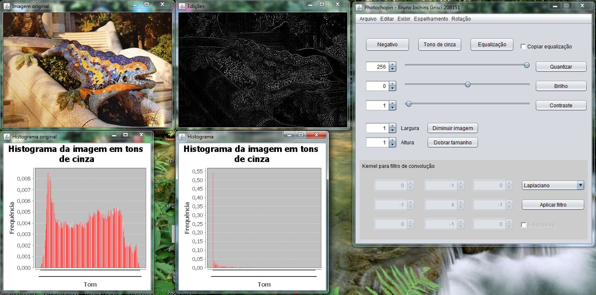
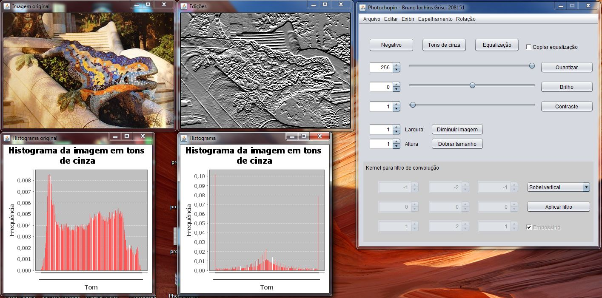

Relatório Ilustrado do 3° Trabalho Prático
Bruno Iochins Grisci – 208151
INF01046 - Fundamentos de Processamento de Imagens
Prof. Manuel Menezes de Oliveira Neto
O relatório das duas primeiras partes deste trabalho prático podem ser acessados através dos links:
http://inf.ufrgs.br/~bigrisci/relatoriofpi.html e http://inf.ufrgs.br/~bigrisci/relatoriofpi2.html
Considerações iniciais
Esta é a terceira e última etapa da construção do editor de imagens PhotoChopin. Todas as funcionalidades da primeira e segunda versões foram mantidas, mas devido a mudanças no layout algumas das opções foram transferidas para um menu superior, como é o caso dos espelhamentos. A nova opção “Recomeçar”, no menu “Editar”, restaura a imagem original na janela de edições. A checkbox “Copiar equalização” copia a imagem da janela de equalização para a janela de edições quando selecionada. A linguagem utilizada para o desenvolvimento do programa é Java.
Zoom out
A operação de zoom out reduz o tamanho da imagem por dois valores de escala (largura e altura) fornecidos pelo usuário. A implementação consiste em obter a média dos valores dos pixels sobre uma região retangular com as dimensões dos valores de escala e aplicar a média destes valores a um único pixel na imagem de saída. Esta operação é aplicada sobre toda a imagem de entrada, de modo que o “retângulo” percorra toda a matriz de pixels, nunca cobrindo o mesmo pixel duas vezes. A dimensão da imagem de saída é o teto da largura original dividida pelo fator de escala horizontal e o teto da altura original dividida pelo fator de escala vertical. Esta operação causa perda de informação da imagem.
Etapa concluída sem dificuldades.
Zoom out 2x2 aplicado uma vez
Zoom out 2x2 aplicado duas vezes
Zoom out 1x3
Zoom out 3x1
Zoom in
A operação de zoom gera uma nova imagem de dimensões 2x largura original -1 e 2x altura original -1. O resultado é obtido interpolando-se cada linha e coluna da imagem original com linhas e colunas vazias. Os novos pixels recebem o valor da média dos valores de seus pixels vizinhos. Primeiro realiza-se esse preenchimento para os pixels com valores a esquerda e a direita, depois para os com valores acima e abaixo, e por fim os que restaram com os pixels das linhas superiores e inferiores da mesma coluna. Esta operação causa perda de resolução na imagem.
Etapa concluída sem dificuldades.
Zoom in aplicado uma vez
Zoom in aplicado duas vezes
Rotações de 90°
Foram implementadas duas rotações, horária e anti-horária. Ambas preservam as dimensões e tons da imagem original. Aplicar a mesma rotação três vezes seguidas retorna a imagem a sua configuração original. Na rotação horária é feito um mapeamento que leva o pixel da linha i e coluna j da imagem original para a coluna altura – j -1 e linha i na edição. Na rotação anti-horária é feito um mapeamento que leva o pixel da linha i e coluna j da imagem original para a coluna j e linha largura – i - 1 na edição.
Etapa concluída sem dificuldades.
Uma rotação horária
Duas rotações horárias
Uma rotação anti-horária
Três rotações anti-horárias
Convolução
A convolução gera uma nova imagem com as mesmas dimensões da original. Para simplificar a implementação, a convolução é aplicada sobre imagens em tons de cinza e ignora as bordas da imagem. Os valores do kernel 3x3 são fornecidos pelo usuário, bem como a opção de embossing (somar 127 ao valor de cada pixel), no filtro arbitrário. Os filtros pré-definidos (Gaussiano, Laplace, Passa Altas Genérico, Prewitt vertical e horizontal e Sobel vertical e horizontal) não são editáveis e podem ser selecionados através de um menu. A última casa decimal dos valores do kernel do filtro Gaussiano não é exibida na matriz por questões de limitação do jSpinner, mas está sendo considerada no cálculo do algoritmo.
A implementação consiste em atribuir a cada pixel da imagem de saída a soma das multiplicações dele mesmo e seus 8 vizinhos ao seu redor pelos respectivos valores do kernel rotacionado 180°.
Etapa concluída sem dificuldades.
Filtro arbitrário para a identidade
Filtro arbitrário sem embossing
Filtro arbitrário com embossing
Filtro Gaussiano

Filtro Laplaciano
Filtro Passa Altas Genérico
Filtro Prewitt horizontal
Filtro Prewitt vertical
Filtro Sobel horizontal

Filtro Sobel vertical
Conclusão
Não houve dificuldades em implementar as operações citadas com base nos algoritmos vistos em aula. Trabalho muito interessante para o aprendizado e compreensão do funcionamento de filtros no domínio espacial, rotações e ampliação e redução de imagens.
{kind=link}